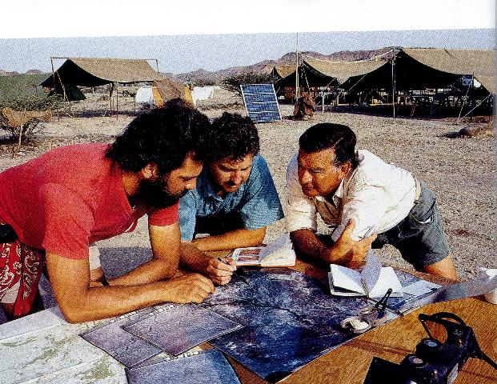

La Tierra y El Hombre
LA TIERRA
Una atmósfera rica en oxígeno, temperaturas moderadas, agua abundante y una composición química variada permiten a la Tierra ser el único planeta conocido que alberga vida. El planeta se compone de rocas y metales, sólidos en el exterior, pero fundidos en el núcleo. Esta fotografía tomada en 1972 por la nave espacial Apolo 17 muestra la península Arábiga, África y la Antártida (la mayor parte del área blanca de la base).
MOVIMIENTOS
Al igual que todo el Sistema Solar, la Tierra se mueve por el espacio a razón de unos 20,1 km/s o 72,360 km/h hacia la constelación de Hércules. Sin embargo, la galaxia Vía Láctea como un todo, se mueve hacia la constelación Leo a unos 600 km/s. La Tierra y su satélite, la Luna, también giran juntas en una órbita elíptica alrededor del Sol. La excentricidad de la órbita es pequeña, tanto que la órbita es prácticamente un círculo. La circunferencia aproximada de la órbita de la Tierra es de 938.900.000 km y nuestro planeta viaja a lo largo de ella a una velocidad de unos 106.000 km/h. La Tierra gira sobre su eje una vez cada 23 horas, 56 minutos y 4,1 segundos. Por lo tanto, un punto del ecuador gira a razón de un poco más de 1.600 km/h y un punto de la Tierra a 45° de altitud N, gira a unos 1.073 km/h.
Además de estos movimientos primarios, hay otros componentes en el movimiento total de la Tierra como la precesión de los equinoccios y la nutación (una variación periódica en la inclinación del eje de la Tierra provocada por la atracción gravitacional del Sol y de la Luna.
La datación radiométrica ha permitido a los científicos calcular la edad de la Tierra en 4.650 millones de años. Aunque las piedras más antiguas de la Tierra datadas de esta forma, no tienen más de 4.000 millones de años, los meteoritos, que se corresponden geológicamente con el núcleo de la Tierra, dan fechas de unos 4.500 millones de años, y la cristalización del núcleo y de los cuerpos precursores de los meteoritos, se cree que ha ocurrido al mismo tiempo, unos 150 millones de años después de formarse la Tierra y el Sistema Solar .
Después de condensarse a partir del polvo cósmico y del gas mediante la atracción gravitacional, la Tierra habría sido casi homogénea y relativamente fría. Pero la continuada contracción de estos materiales hizo que se calentara, calentamiento al que contribuyó la radiactividad de algunos de los elementos más pesados. En la etapa siguiente de su formación, cuando la Tierra se hizo más caliente, comenzó a fundirse bajo la influencia de la gravedad. Esto produjo la diferenciación entre la corteza, el manto y el núcleo, con los silicatos más ligeros moviéndose hacia arriba para formar la corteza y el manto y los elementos más pesados, sobre todo el hierro y el níquel, sumergiéndose hacia el centro de la Tierra para formar el núcleo. Al mismo tiempo, la erupción volcánica, provocó la salida de vapores y gases volátiles y ligeros de manto y corteza. Algunos eran atrapados por la gravedad de la Tierra y formaron la atmósfera primitiva, mientras que el vapor de agua condensado formó los primeros océanos del mundo.
EL HOMBRE
Neandertal, nombre común de la especie Homo sapiens neanderthalensis (también llamada Homo neanderthalensis). Los neandertales (o neandertalenses) han sido en ocasiones considerados como una subespecie de la especie humana moderna (Homo sapiens sapiens o simplemente Homo sapiens), pero progresivamente han sido consideradas una y otra especies diferentes. Los neandertales cubren un largo periodo, entre 120.000 y 30.000 años aproximadamente. Se han encontrado en yacimientos de la edad de piedra pertenecientes al paleolítico medio, principalmente en Europa y en el suroeste asiático. Esta especie recibe el nombre del valle del río alemán Neander, donde se encontraron en 1856 sus primeros restos, que recibieron la denominación de hombre de Neandertal.
No se han encontrado individuos completos ni enterramientos, por lo que en ocasiones sólo se pueden atribuir a este tipo humano por su asociación a material lítico musteriense. Los primeros restos antropológicos pertenecientes a neandertales en España se descubrieron en 1848 de forma accidental en Gibraltar, hallazgo previo al descubrimiento del fósil del valle del Neander, aunque no fue identificado como especie propia. Pese a que se han hallado otros restos en diversos lugares de España (Granada, Barcelona), los más representativos son los citados de Gibraltar. En la Meseta central sólo ha aparecido un fragmento perteneciente a una joven de 10-18 años en Los Casares (Guadalajara). Los neandertales poseían un cráneo de paredes gruesas, achatado y alargado. Presentan marcados arcos superciliares. Todo ello contrasta con los cráneos del hombre moderno, más redondeado y con las paredes óseas más delgadas. Disponían de una alta capacidad craneal (1.450 centímetros cúbicos). El robusto esqueleto, de tronco largo y piernas cortas, estaba bien adaptado a su forma de vida cazadora-recolectora en un medio ambiente que con frecuencia era extremadamente frío, y que concluyó con el último periodo glacial. Aunque los hombres eran más corpulentos que las mujeres, ambos poseían una gran musculatura ya desde la infancia. Tenían una cabeza grande con unas prominentes narices y un mentón retraído. Como promedio general, sus cerebros eran del mismo tamaño o mayores que el cerebro del hombre moderno, lo que se relaciona más con el gran tamaño del cuerpo y su gran musculatura que a una inteligencia más elevada. Eran grupos reducidos, tal como demuestran los asentamientos que se han excavado, y la densidad de población era baja. Aunque la tecnología empleada por los neandertales era bastante sencilla, hay pruebas de que eran cazadores hábiles pero también se dedicaron a la pesca.
La recolección tuvo un papel muy destacado en la obtención de alimento, casi al mismo nivel que la caza, y con ellos aparecen las primeras muestras de prácticas religiosas al enterrar a los muertos. Desaparecieron del registro arqueológico europeo hace unos 30.000-35.000 años, probablemente como resultado de la aparición del hombre moderno (véase Homo sapiens) que competiría con los neandertales por los mismos recursos.
De los neandertales se saben muchas cosas: son los fósiles humanos mejor conocidos. Sabemos muy bien cómo eran físicamente: más bien bajos, pero muy fuertes, con un cráneo plano y alargado, un grueso reborde óseo sobre los ojos y una mandíbula sin mentón. El segundo fósil neandertal descubierto y uno de los mejor conservados es este cráneo femenino encontrado en Gibraltar en 1848 ). La propuesta de nombrar una nueva especie humana como Homo calpicus (en latín, el hombre de Gibraltar) fue relegada a favor de la especie Homo neanderthalensis basada en un esqueleto descubierto en el valle de Neander, Alemania, en 1856. Los neandertales se extinguieron a causa de la llegada a Europa de nuestros antepasados, los hombres de Cro-Magnon. Esta inmigración debió de ocurrir hace más de 35.000 años, probablemente alrededor de unos 40.000.
No
parece que los neandertales y nuestros antepasados se hayan mezclado,
por lo menos en una escala apreciable.
Todo indica que los neandertales que vivían al sur del continente, en el Cáucaso, Crimea, los Balcanes, Italia y la península Ibérica, fueron los últimos que quedaron, resistiendo hasta hace unos 27.000 años. Los que vivían en la Cova Negra de Xátiva, Valencia, se asomaban al recodo del río Albaida ¿Qué tenían los hombres de Cro-Magnon que les hizo superiores? Demostraron una gran capacidad simbólica a través de objetos de adorno y representaciones artísticas.
Tal vez el uso de símbolos les ayudase a formar alianzas entre pequeños grupos humanos muy repartidos por un territorio enorme. Aún queda bastante por descubrir en torno a este tema, pero muchas de las claves del misterio se encuentran en los yacimientos ibéricos.
Cro-Magnon, Hombre de, homínido de características muy similares al hombre actual, que pertenece a la subespecie del Homo sapiens sapiens. Los hombres de Cro-Magnon vivieron en el oeste y sur de Europa durante la última glaciación.
Las características físicas que distinguen al Cro-Magnon del Neandertal son su frente elevada y su barbilla perfectamente definida. Las herramientas y utensilios atribuidos al periodo más antiguo de la cultura Cro-Magnon, el auriñaciense, perteneciente al paleolítico superior , demuestran claramente que habían llegado a dominar el arte de fabricar divesos instrumentos de piedra, hueso y marfil. Los hombres de Cro-Magnon llevaban vestimentas ceñidas y decoraban sus cuerpos con joyas y adornos de concha y hueso.
Las pinturas rupestres encontradas en las paredes de algunas cuevas (véase Hombre de las cavernas) constituyen una prueba adicional de su elaborada cultura. Se cree que los Cro-Magnon fueron los antepasados remotos de los pueblos que habitan en el sur y oeste de Europa. El nombre Cro-Magnon proviene de un refugio rocoso de igual nombre en el departamento de Dordoña en el suroeste de Francia, donde en 1868 se descubrieron restos de esqueletos.
Los paleoantropólogos continúan debatiendo la posible línea de evolución humana. Los que defienden la idea de que el Homo sapiens evolucionó de forma gradual en todo el mundo, sin extender sus actividades a otras especies diferentes, apoyan el 'modelo multirregional'. Los que defienden la tesis de un origen único o 'central', postulan que la evolución humana se dio en poblaciones aisladas que se desarrollaron de forma diferenciada en las distintas partes del mundo, hasta que la especie Homo sapiens demostró mayores éxitos que las anteriores extendiéndose por todo el mundo.
National
Geographic.- Edición especial.- Otoño 2000
Hace ya un montón de años que un artículo en un periódico ofrecía una noticia que versaba sobre el descubrimiento en África de unos huesos ¿humanos? que al parecer podían ser del hombre más antiguo del mundo y al que por nombre le habían puesto LUCY.
Aquella
noticia me hizo reflexionar sobre el tal descubrimiento y ello me llevó
a la eterna pregunta de donde venimos y a donde vamos .
Mi círculo de amistades siempre ha sido muy reducido y últimamente
se ha quedado al mínimo.
Pero
tengo una buena amiga con la que frecuentemente conversamos sobre los temas
mas diversos y ello me llevó a coleccionar en un grueso tomo aquellos
temas que muchas de las veces me llevaban a consultar una enciclopedia, consultas
que aunque de una forma muy resumida me ilustraban con certeza del tema.
El
indicado tomo consta de tan variado contenido que va desde la reconstrucción
virtual del edificio de lo que fue la Biblioteca de Alejandría, pasando
por el método de cálculo de Eratóstenes para medir con
precisión la
circunferencia de la Tierra, a párrafos diversos del libro de Carl Sagan
titulado Cosmos, así como otros que tratan de la dilatación
del tiempo o simplemente artículos de la prensa diaria, incluso algunos
que son críticos con la vida actual y hasta irónicos o sarcásticos
sobre nuestro moderno modo de vivir.
Hace algún
tiempo, al pasar por un kiosko de venta de prensa, adquirí una publicación
de poco precio que trataba de los orígenes del hombre, la que quedó
arrumbada para una mejor ocasión.
Nunca
más pude volver a tener noticias de mi antigua conocida Lucy y he aquí
que al volver a aquella publicación que había arrumbado, quedé
sorprendido de que unos de sus artículos trata precisamente con todo
de talle, de mi admirada Lucy. Por supuesto que ello me lleva a aumentar mi
ya grueso tomo donde vierto aquello que me agrada e ilustra.
Pero no
puedo por menos que hacerme una reflexión de cuanta maravilla contiene
esta vida que generalmente está tan mercantilizada.
Una
maravilla es, que un pequeño –opino– grupo de gentes dediquen
su vida, a investigar en terrenos generalmente agrestes, sobre huesos que pueden
proporcionarles datos de seres que vivieron hace varios millones de años
y, que den a conocer al resto del mundo sus conocimientos.
Pero también es otra maravilla que otro grupo de gentes, dedique su atención y trabajo publicando con el mayor esmero esos descubrimientos y lo hagan por unas pocas monedas para que pueda conocerse lo que otros con tanta dedicación han realizado.
¡Gracias, gracias, a los unos y los otros!
J.A.G.
Barcelona, mayo, 2002
LOS ALBORES DE LA HUMANIDAD.- CARA
A CARA CON LA FAMILIA DE LUCY
Por DONALD
C. JOHANSON
Fotografías
de ENRICO FERORELLI
Dibujos de JOHN GURCHE
En 1974, en las áridas tierras de Hadar, Etiopía, el paleoantropólogo Donald Johanson exhumó un conjunto de huesos fosilizados. Conocido como Lucy, es el esqueleto de homínido más completo de su época y el más famoso Australopithecus afarensis, supuesto antepasado de todos los homínidos posteriores, incluidos nosotros. Aunque sus huesos demuestran que caminaba erguida, entre los restos de Lucy faltaba el cráneo, el más revelador de los indicios anatómicos. En 1992, el equipo de Johanson halló lo que buscaba: un cráneo afarensis. De mandíbula prominente, frente amplia, mejillas anchas y músculos fuertes, la cabeza de aspecto simiesco de este macho -recreada por John Gurche- contenía un cerebro equivalente a un tercio de un humano actual. Comparado con fósiles afarensis más antiguos, el cráneo de hace tres millones de años confirma que las especies sobrevivieron 900.000 años sin apenas cambios.
Necesitamos un cráneo. En realidad debemos conseguir un cráneo completo.» Este objetivo, que subrayé en mi diario nada más llegar a Hadar, estaba en la mente de todos nosotros mientras levantábamos el campamento en la extremadamente calurosa soledad de la región de Afar, en Etiopía.
Era nuestra segunda expedición en Hadar tras una interrupción de diez años durante la década de los ochenta, cuando el gobierno etíope impuso una moratoria sobre los trabajos de campo. Pero en 1990, el Ministerio de Cultura y Deportes invitó a nuestro equipo del Institute for Human Origins (IHO) de Berkeley, California, a regresar. Era enero de 1992 y yo estaba encantado de encontrarme de nuevo en este territorio, contemplando las interminables tierras yermas de Hadar, con sus multicolores estratos de arenas, Iodos, lava y ceniza volcánica. Como siempre habíamos hecho, plantamos las tiendas en lo alto de un risco sobre el río Awash, donde nos sentaríamos al final del día para observar cómo la puesta de sol bañaba las colinas y los valles de matices naranja y púrpura.
Fue allí donde, un día abrasador de 1974, encontramos a Lucy. Lo primero que vimos fue su codo sobresaliendo de entre los sedimentos, pero rápidamente identificamos el hueso como el de un homínido, un miembro del árbol genealógico humano. Regresamos a toda prisa al campamento en nuestro Land Rover, tocando el claxon, y enseguida nos dimos cuenta de que habíamos encontrado algo más que un codo. Lucy, a quien bautizamos así por una canción de los Beatles muy popular en el campamento (Lucy in the Sky With Diamonds), pertenecía a una nueva especie de antepasados de los humanos, que en 1974 denominamos Australopithecus afarensis.
Datada en hace más de tres millones de años, Lucy era el fósil de homínido más antiguo y completo que se había encontrado jamás. Medía poco más de un metro y presentaba unas características simiescas y humanas a la vez. Los largos brazos le colgaban a ambos costados como los de un simio, pero los huesos de las piernas y de la pelvis indicaban que caminaba erguida sobre dos piernas. Mis colegas del IHO y yo hemos creído durante mucho tiempo que la especie a la que pertenecía Lucy era el antepasado común de todos los homínidos posteriores, incluido nuestro propio género, el Homo. En cierto modo, la vemos como la madre de toda la especie humana.
Pero no todo el mundo está de acuerdo. La discrepancia se remonta a finales de los años setenta, cuando dijimos que Lucy y los otros 250 especímenes de homínido recogidos en Hadar pertenecen a una única especie: A. afarensis. Lucy no era el único hallazgo espectacular en Hadar. Al año siguiente de haberla encontrado, descubrimos los fósiles de al menos 13 individuos más -la denominada Primera Familia- en un yacimiento cercano.
Muchos de los huesos procedían de homínidos de tamaños muy diferentes, y algunos estudiosos argumentaban que las variaciones eran tan grandes que en Hadar habrían habitado por lo menos dos especies. Afirmaban que una de esas criaturas, y no Lucy, podría ser nuestro último antepasado común.
Nosotros, sin embargo, pensábamos que el afarensis era simplemente una especie en la que los machos eran mucho más grandes que las hembras. Esta característica, denominada dimorfismo sexual, se observa en los simios, nuestros primos más cercanos hablando en términos evolutivos. Los gorilas machos, por ejemplo, son mucho más altos y dos veces más pesados que las hembras. Pero sus huesos, aunque diferentes en tamaño, son prácticamente idénticos. ¿Cuál era el patrón de dimorfismo sexual en el afarensis? Para responder a esta pregunta necesitábamos encontrar más huesos, grandes y pequeños, y compararlos.
Ante todo, necesitábamos un cráneo completo. Lucy y todos los demás individuos carecían de rostro, y solamente teníamos pequeños fragmentos de sus cráneos, la parte más reveladora de la anatomía. Ahí es donde se aprecian las diferencias entre las especies de homínidos, en la inclinación de la frente, la forma de los arcos superciliares y el grado de prominencia de los pómulos. Sin el cráneo, ¿cómo podíamos saber el aspecto que tenían Lucy y su familia? ¿Cómo observar los detalles de su anatomía craneal que los distinguen de otros homínidos?
Durante los años ochenta, dos de mis colegas, Bill Kimbel, del IHO, y Tim White, de la Universidad de California en Berkeley, montaron de forma parcial un cráneo de macho a partir de fragmentos de diversos individuos hallados en Hadar, pero faltaban muchas piezas y no había forma de saber con certeza si teníamos todos los rasgos distintivos del cráneo afarensis. Por eso, cuando reanudamos la búsqueda en Hadar en 1990, nuestro objetivo más urgente era encontrar un cráneo completo.
En nuestra primera campaña de vuelta en Hadar, que fue principalmente de reconocimiento del terreno, un día apareció por el campamento un joven de la tribu afar llamado Dato Adan. Flaco y atlético, era el típico afar que hoy vive donde un día vagó Lucy. Los afar, cuyos cuerpos casi no tienen grasa, comen poco y se alimentan esencíalmente de las cabras que crían. Van a todas partes caminando, como hacían Lucy y sus paríentes. Siempre hemos confiado en los afar como guías y guardas. Con sus ávidos ojos y su paciencia, han demostrado ser habilidosos buscadores de fósiles.
Cuando Dato Adan se enteró de que habíamos regresado, caminó una larga distancia con la esperanza de trabajar para nosotros. Se nos presentó con un fragmento de mandíbula inferior que había encontrado durante su camino. Un miembro de nuestro proyecto, Yoel Rak, de la Universidad de Tel Aviv y especialista en homínidos, identificó inmediatamente la mandíbula como la de un homínido. Dato nos guió hasta el lugar donde la había encontrado. Encajaba perfectamente en la depresión cóncava de donde la había extraído el día anterior. Allí mismo contratamos a Dato. Como aquella campaña era demasiado corta para excavar en busca de más fragmentos, tuvimos que dejar las exploraciones sucesivas para el segundo año.
Nuestra segunda campaña empezó con nuevos descubrimientos. Nada más llegar, uno de nuestros antiguos guías afar, Dato Ahmedu nos condujo hasta una mandíbula de homínido que había descubierto en nuestra ausencia mientras apacentaba sus cabras. El hallazgo de esta mandíbula inferior fue excitante porque procedía de un sector de Hadar que aún no se había explorado en busca de fósiles. En cambio, su geología se había estudiado con detalle, y sabíamos que la nueva mandíbula procedía de unos sedimentos situados justo por debajo de un estrato de ceniza volcánica de 2,95 millones de años. No sabíamos exactamente cuántos años tenía Lucy, así que determinar la edad de los depósitos en que fue hallada era una de las prioridades. La sospecha de que esta mandíbula era significativamente mas joven y que podría pertenecer a alguno de los descendientes de Lucy se confirmó con posterioridad.
Una mañana, mientras uno de los dirigentes del equipo, Bob Walter, geólogo jefe del IHO, y su colega etíope Mike Tesfaye cartografiaban esta nueva sección, subí una pronunciada pendiente para investigar un gran fósil que sobresalía del sedimento: la mandíbula de un elefante. Decidí mirar por los alrededores y caminé hacia un barranco, cuando un hueso en forma de llave inglesa me llamó la atención. Parecía un cúbito enorme, el doble que el de Lucy
Me apresuré colina abajo para comunicar mi hallazgo a Yoel y Bill Kimbel, tercer responsable del equipo. Al principio Bill dijo que el hueso era muy grande para ser de un homínido, pero Yoel le convenció de que yo tenía razón. En unos minutos encontramos un hueso de la mano y, a continuación, Zelalem Assefa, uno de nuestros colegas etíopes, descubrió otro. Enseguida localizamos parte de un cráneo afarensis -la región craneal por encima del puente de la nariz- que nunca antes habíamos encontrado.
Al comparar el cúbíto con un molde del de Lucy vi que eran idénticos excepto en el tamaño. Debía de pertenecer a un macho de la misma especie. Los afarensis presentan el mismo dimorfismo sexual en tamaño corporal que los gorilas. Si este macho y Lucy hubiesen vivido a la vez, podrían haber sido pareja. Aquella noche soñé que fuera nos podía estar esperando un esqueleto completo de macho, un hallazgo tan emocionante como el de Lucy . Jamás lo hallamos, pero la campaña nos deparaba otra cosa.
El 26 de febrero, Bob Walter y yo visitamos a unos colegas que trabajaban en otro sector de Hadar. Cuando regresamos, Bill Kimbel nos recibió cerca de la tienda comedor.
«Pues seguimos teniendo suerte», dijo.
Yoel, sentado a la mesa, esbozó una sonrisa. «He encontrado un cráneo», dijo simplemente. Mi corazón iba a cien mientras enumeraba las diferentes partes del cráneo: el hueso occipital, un gran fragmento de paladar con dientes, muchos trozos de la bóveda craneal, un colmillo... y la cara. Tenía la mayor parte de un cráneo grande y robusto, ¡sin duda un macho afarensis!
A la mañana siguiente fuimos todos a inspeccionar el yacimiento. Conocido en la actualidad como Localidad Afar 444, tenía vistas al cauce seco de un uadi llamado Kada Hadar. Empezamos a señalizar la ubicación de cada uno de los fragmentos óseos con un clavo provisto de una cinta de color. Yoel se entusiasmó al ver un enorme pómulo entre los sedimentos. Aquella escena era digna de ver. Todo el mundo se acercaba de puntillas a examinar el pómulo, procurando no pisar los otros huesos.
Los afar ascendieron la colina lentamente, como si caminasen por un campo de minas. Formaron un semicírculo alrededor de Yoel, al que llamaban Doctor porque trataba sus enfermedades. Miraron sus manos y sonrieron, diciendo: «Mehe, kada mehe», que significa «Bien, muy bien».
Aquella noche, sentados alrededor de una hoguera, los afar se unieron al grupo. Uno de ellos hizo imitaciones de todos nosotros. Después empezaron a cantar y a bailar a nuestro alrededor. Dato Adan me explicó que así daban gracias a Alá por habernos permitido encontrar lo que queríamos.
Al final de la campaña regresamos a Addis Abeba con unos 200 fragmentos del nuevo cráneo, muchos de ellos aún incrustados en piedra. Fueron almacenados en el Museo Nacional de Etiopía hasta el inicio del arduo trabajo de prepararlos y ensamblarlos para formar un cráneo.
Bill, Yoel y yo hicimos un viaje especial a Etiopía a principios de 1993 para trabajar en la reconstrucción del cráneo durante un mes. Pasamos días examinando los fragmentos en un laboratorio del museo. Con ayuda de microscopios y de agujas afiladas arrancamos los granos de sedimento que el tiempo había adherido a los fragmentos craneales. Bill y Yoel unieron las piezas y al fin pudimos mirar a los ojos de esta magnífica cara. Pronto llegamos a importantes conclusiones, como que, para los estándares de A. afarensis, este macho era un anciano, pues sus dientes estaban muy desgastados. Es difícil calcular su edad, ya que desconocemos el ritmo de envejecimiento de estos homínidos. Asimismo, los colmillos de este individuo conservaban las raíces anchas típicas de los grandes simios macho, pero las coronas eran más pequeñas, parecidas en tamaño a los colmillos de una hembra afarensis, lo cual implica que nuestro macho no necesitaba esos dientes tanto como sus primos, los grandes simios. Los gorilas macho tienen harenes y usan los colmillos para luchar por las hembras o por establecer su dominio. Tal vez los afarensis desarrollaron una estrategia de apareamiento diferente. Owen Lovejoy, paleoantropólogo de la Universidad Estatal de Kent, sugiere que los colmillos más pequeños indican menor competencia por las hembras, señal de que la monogamia podría haberse desarrollado hace más de tres millones de años.
No obstante, este macho presentaba una constitución corpulenta; sus fuertes músculos maxilares le han dejado marcadas áreas rugosas donde éstos se unían al cráneo, lo que indica su tamaño y su fuerza. Su cara se proyectaba hacia adelante por debajo de la frente, como la de un simio. Aún falta determinar el tamaño exacto de su cerebro. Probablemente superaba los 500 centímetros cúbicos. El cerebro del Homo habilis, uno de los más antiguos de nuestro género, tenía un promedio de 630, y el cerebro humano actual, alrededor de 1.300.
Este nuevo cráneo también ayuda a aclarar la posición de Lucy en el árbol genealógico humano. Para empezar, desmonta el antiguo argumento de que el afarensis era una versión de África oriental de otro antiguo homínido, el Australopithecus africanus, que vivió en el sur del continente hace entre 2,5 y 3 millones de años. Los cráneos de ambas especies muestran claras diferencias, lo que hace difícil sostener que el afarensis no es una especie distinta.
Quizá lo más significativo sea que el nuevo cráneo de macho -junto al enorme cúbito que encontré- confirma la idea de que los machos afarensis eran más grandes que las hembras. Calculamos que, como promedio, el macho medía 1,5 metros y pesaba 45 kilos, mientras que la hembra era unos 30 centímetros más baja y pesaba alrededor de 27 kilos. Ahora podemos defender, con mayor certeza que nunca, que el dimorfismo sexual es lo que produce la variación de tamaño observada en los fósiles de Hadar. Estamos seguros de que los afarensis eran la única especie de homínido en Hadar, y el mejor candidato para representar al último antepasado común de todos los homínidos posteriores, incluidos los humanos.
Las anteriores campañas en Hadar supusieron el hallazgo de otros fósiles importantes. Durante tres años logramos recoger más fragmentos faciales en el yacimiento donde Dato Adan había encontrado el hueso maxilar en 1990. Al fin nos dimos cuenta de que teníamos la mayor parte de una cara de hembra afarensís. Con técnicas avanzadas de imagen digital, ensamblamos los fragmentos hasta formar un cráneo. En cierto modo, pusimos una cara a Lucy.
Se parecía mucho a la imagen que nos habíamos formado de ella: tenía los colmillos pequeños y la parte central de su cara sobresalía ligeramente, menos que la de un simio pero más que la de un humano. Habría hecho buena pareja con el macho de la Localidad Afar 444, pero hubiera sido muy vieja para él, ya que vivió 180.000 años antes. Podemos afirmar este dato porque al fin hemos determinado la edad de Lucy. Las estimaciones oscilaban entre los 2,8 y los 3,6 millones de años. Antes no estábamos seguros porque los minerales de algunos de los estratos de ceniza volcánica que solíamos usar para datar las formaciones que contenían fósiles se habían alterado o contaminado debido a procesos geológicos posteriores. Algunos estratos, como el que había por debajo de Lucy, no tenían suficientes minerales datables.
Durante los años ochenta, las nuevas tecnologías de datación mediante láser desarrolladas por Derek York, de la Universidad de Toronto, facilitaron la obtención de una fecha precisa a partir de un cristal microscópico de mineral volcánico. Bob Walter podía ahora determinar la antigüedad de la mayoría de los fósiles de Hadar. La obtención de fechas fiables es importante para conocer el ritmo de la evolución humana. Ahora podemos afirmar que Lucy vivió hace 3,18 millones de años, 10.000 arriba o abajo. El nuevo macho anduvo por Hadar hace unos tres millones de años, lo que lo convierte en el individuo más reciente de Hadar.
Al hacer el montaje de la Primera Familia se vio que ésta era algo más antigua que Lucy: alrededor de 3,2 millones de años. Los individuos más antiguos se remontan a 3,4 millones de años, lo cual indica que los afarensis permanecieron prácticamente inalterables durante mucho tiempo en Hadar, al menos a lo largo de 400.000 años. Otro fragmento craneal hallado en 1981 en un yacimiento de 3,9 millones de años de antigüedad, a unos 60 kilómetros al sur de Hadar, también podría ser afarensis.
Si es así, la especie de Lucy habría sobrevivido durante 900.000 años sin sufrir apenas variación. Parece que estos homínidos se adaptaban con facilidad, o quizás iban cambiando de un modo que no podemos detectar en los fósiles.
Tras ese largo período, el clima africano se hizo más frío y seco. Pienso que fue entonces cuando los afarensis dieron lugar a nuevas ramas de homínidos, una de las cuales evolucionó hacia Homo. Pero el origen de nuestro género, que probablemente ocurrió medio millón de años después de que viviera Lucy, sigue inspirando apasionadas discusiones
¿Caminaba Lucy como nosotros? Las huellas dejadas por al menos dos afarensís sobre la ceniza volcánica de una erupción de hace 3,5 millones de años en Laetoli, Tanzania, muestran claramente un paso que recuerda al humano: un fuerte golpe de talón, seguido de un impulso con el dedo gordo del pie para adelantar el cuerpo. Sus dedos gordos no eran divergentes como en los demás primates, que los utilizan para agarrarse a las ramas de los árboles. Además, según Owen Lovejoy y Bruce Latimer, del Museo de Historia Natural de Cleveland, las caderas y la disposición muscular pelviana de Lucy le habrían dificultado subir a los árboles, como nos sucede a los humanos actuales.
Por otra parte, Randall Susman, Jack Stern y William Jungers, de la Universidad del Estado de Nueva York en Stony Brook, aprecian una curvatura en los huesos de los dedos de las manos y de los pies de Lucy parecida a la de los simios que viven en los árboles. Los brazos de Lucy, más largos, le habrían ayudado a subirse a las ramas. Los especialistas de Stony Brook también observan alguna evidencia en el tobillo y la pelvis de Lucy que sugiere que habría caminado con las piernas algo dobladas. Creen que pasaba mucho tiempo en los árboles y que tal vez dormía en las ramas. No estoy de acuerdo con esta teoría sobre su manera de andar. Si Lucy se sentía atraída por un árbol frutal, se subiría a él, pero la mayor parte del tiempo caminaba sobre dos piernas como nosotros.
Al margen de cómo caminaba Lucy, probablemente se desplazaba en grupo. Si los afarensis tenían alguna ventaja sobre otros animales, ésta radicaba en que vivían en grupos sociales compuestos tal vez por 25 o 30 miembros. No hay evidencias de que pasaran a una nueva etapa cultural. Eso sucedería medio millón de años después de Lucy, con la invención de las herramientas de piedra, las cuales permitieron a los homínidos descuartizar a los animales y trocear la carne en pedazos comestibles.
Los afarensis tenían más posibilidades de ser atacados que de atacar, y el grupo habría ofrecido resistencia ante los carnívoros, en especial de noche y sin la protección del fuego. Puedo imaginarme un grupo de padres afarensis aullando y lanzando piedras a un tigre de dientes de sable. Los carnívoros podían conseguir alimento con menos esfuerzo cazando una gacela.
Los fósiles de Hadar dan mucha información acerca de la dieta de los afarensis, cuya dentadura carecía de los dientes desgarradores de los carnívoros. Al microscopio se observa que sus incisivos presentan estrías y desgastes producidos por un material fibroso, lo que sugiere que usaban estos dientes para arrancar comida de algún tipo de vegetación áspera. Además, el esmalte se ha desprendido de los colmillos. Por estos datos llegamos a la conclusión de que debían de morder alimentos duros, quizá cáscaras de frutos secos. Los afarensis evolucionaron desde un pasado vegetariano, y aunque en ocasiones comieran termitas, lagartos u otros pequeños animales, su dieta se basaba en alimentos vegetales.
El paisaje de Hadar era mucho más exuberante hace tres millones de años.
Los estudios de fósiles de flora y fauna primitivas apuntan que la región de Afar estuvo poblada de coníferas perennes y olivos silvestres. Aun así, Lucy tuvo que sobrevivir en hábitats muy variados, desde praderas a bosques. Los afarensis desarrollaron una gran adaptabilidad, rasgo que sin duda contribuyó a la resistencia de la especie.
Incluso hoy, los A. afarensis -y quienes los estudiamos- deben adaptarse. Lucy ha sido destronada recientemente. El año pasado Meave Leakey, del Museo Nacional de Kenya, anunció que ella y su equipo habían hallado un homínido más antiguo que Lucy. En Kanapoi, un yacimiento cerca del lago Turkana, encontraron fragmentos de una nueva especie bípeda de 4,1 millones de años de antigüedad que ella llamó Australopithecus anamensis. La nueva especie tiene muchas características en común con Lucy, pero es mucho más primitiva y de dientes más simiescos. Sospecho que el anamensis es la especie que dio lugar al afarensis.
A finales de 1994, un equipo internacional dirigido por Tim NVhite anunció que había hallado huesos de un homínido aún más antiguo en Aramis, Etiopía. Desde entonces, Tim y sus colegas etíopes han desenterrado un esqueleto casi completo de dicha criatura, que se remonta a 4,4 millones de años. Su posición en el árbol genealógico humano es motivo de debate. Presenta muchas características de chimpancé, suficientes como para que Tim decidiera crear un género nuevo y llamara al animal Ardipithecus ramidus. Con el estudio del nuevo esqueleto el linaje de este homínido se esclarecerá pronto.

Fuera de su campamento -primitivo excepto por los paneles solares para las baterías de los ordenadores-, Kimbei,Walter y Johanson estudian una fotografía aérea de la región de Hadar. La zona donde se les permite excavar limita al sur con el río Awash, un oscuro surco que cruza la faz picada de Afar. Las fotografías ayudan a localizar posibles yacimientos de fósiles en los antiguos cauces y en las llanuras de inundación.
Entretanto, Lucy y su familia aún tienen mucho que decirnos. Nuestro trabajo en Hadar no ha concluido. Hemos reabierto las excavaciones en el yacimiento de la Primera Familia. Durante la campaña de 1994 nos dimos cuenta de que el estrato geológico que contenía los fósiles de homínidos se extiende más allá de lo que creíamos y podría albergar muchos más especímenes. El yacimiento seguramente fue escenario de alguna catástrofe desconocida que mató a un grupo de homínidos, sepultándolos en un instante geológico. Su desgracia será nuestra buena fortuna: nos ofrecerá mejor comprensión sobre cuánto variaban los individuos dentro de un grupo de la especie de Lucy.
El pasado noviembre celebramos el vigésimo primer aniversario del hallazgo de Lucy. Quizá ya no sea nuestro antepasado más antiguo, pero sigue siendo el más conocido.
Publicado en NATIONAL GEOGRAPHIC marzo 1996
Artículo copiado del NATIONAL GEOGRAPHIC, España
Edición especial.- Otoño 2000
Yoel Ralk llevó un molde de yeso del cráneo a la Universidad de Zurcí en Suiza. Allí trabajó con Cristoph Zollikofer y Marcia Ponce de León, científicos que ayudaron a crear un modelo de plástico más completo utilizando imágenes computerizadas y estereolitografía, técnica en la que un láser guiado por ordenador forma un modelo tridimensional a partir de un molde de resina plástica.
La siguiente etapa fue Denver, Colorado. En un estudio, John Gurhe, experto en anatomía facial de primates, aplicó al modelo músculos de plastilina siguiendo las características estructurales que presentaba. Las marcas óseas indicaban una gran actividad de masticación, una nariz ancha y chata,mejillas abocinadas, una boca tipo hocico y orejas en la parte posterior de la cabeza. Gurche añadió capas de grasa y de piel. “ Es gratificante ver que esta cara se parece mucho a la original” , dice.
Para los toques finales, Gurche tuvo que imaginar el color de la piel y el tipo de pelo. Introdujo mechones de pelo de oso con una aguja. Para los ojos vertió varias capas de plástico acrílico, y pintó el iris y la córnea en diferentes capas.<<Es un proceso con muchas fases>>, dice el artista, que invirtió 700 horas en crear la pareja masculina de Lucy. <<Quería dotar de un alma humana a esa cara de simio, para indicar hacia dónde evolucionaba>>.

Neandertal, el enigma que no cesa
Una exposición en Sabadell ofrece una visión de conjunto sobre la extinguida especie humana
JACINTO ANTÓN, Barcelona.- El enigma tiene más de 100.000 años, pero digamos que empezó, para lo que nos ocupa, un día de agosto de 1856 en un remoto valle alemán cerca de Düsseldorf, Neander Tal. Ese día aparecieron en la gruta Feldhofer del susodicho valle los huesos de lo que en principio se pensó que era un oso raro. Resultaron ser de un hombre distinto del actual. Cómo de distinto es algo que aún hoy, después de innumerables investigaciones y encendidas polémicas, no está claro. Ahora, una exposición, muy pedagógica, en el Instituto de Paleontología M. Crusafont de Sabadell, Neandertals (hasta el 10 de septiembre) pone su granito de arena sobre el apasionante tema.
¿Gentes duras pero entrañables como los miembros del clan retratados por Jean M. Auel en sus novelas o brutos capaces de reventar la cabeza de un semejante con un garrote, como en el best seller de 1997 de John Darton Neandertal? Los datos que poseemos pueden leerse de diferentes e incluso opuestas maneras y el péndulo va oscilando, mostrándonos a los neandertales ora inteligentes y sensibles, ora salvajes orcos extinguidos por culpa de su falta de versatilidad, de sutileza en fin.
Parecía que se había avanzado mucho desde la imagen original de animalote peludo del neandertal acuñada en los inicios, pero basta cualquier información que remueva el viejo poso para que vuelva a surgir el tópico. Es lo que ha pasado con la noticia, el mes pasado, de que el análisis a un cráneo de neandertal de hace 36.000 años hallado en 1979 en Saint-Césaire (Francia) ha arrojado evidencias de un acto de violencia intergrupal premeditado. Adiós a la imagen de los inocentes con flores, hola de nuevo al mito del bruto.
"El hombre de neandertal fue el primer fósil humano conocido y sirvió de campo de batalla para la guerra en la aceptación de la teoría de la evolución; nunca ha podido librarse de esos condicionantes", reflexiona el director del museo sabadellense, Jordi Agustí, durante un recorrido por la exposición, organizada por el Ayuntamiento de Murcia y centrada en los importantes hallazgos de neandertales de la Sima de las Palomas y Cueva Negra, en esa comunidad.
La presentación de reproducciones de los restos neandertales hallados en esos yacimientos sirve de excelente excusa para "un repaso a lo que sabemos de la vida de esos hombres". Ordenada en diferentes ámbitos y apoyada en sistemas interactivos, la exposición, que incluye cosas tan sorprendentes como un cráneo del gran oso de las cavernas y el vídeo de un individuo calzado con adidas que muestra cómo tallar la piedra, toca entre otros temas la organización social, la comunicación o la paleoeconomía de los neandertales, y se inclina por una visión cercana de esos primos. "Hay dos escuelas de opinión sobre los neandertales, la europea continental los ve más próximos a nosotros, con capacidad de pensamiento simbólico, lenguaje, etcétera, mientras que la anglosajona tiende a rebajar la humanidad de los neandertales, no acepta que tuvieran enterramientos rituales ni acceso al mundo simbólico".
El hombre moderno y el neandertal convivieron en Europa durante 10.000 años, y es un misterio qué tal lo llevaron. "Hay indicios moleculares de que los neandertales eran una especie diferente, con lo que el cruce fértil no habría sido posible", apunta Agustí, aunque la exposición no deja de hacer mención al célebre fósil portugués del niño de Lagar Velho, que mostraría indicios de hibridación.
La desaparición de los neandertales es otro misterio, parece que la sustitución no fue violenta", señala Agustí. La gran pregunta es ¿por qué ellos? "Al revés que en otros fósiles humanos, en lo que respecta a los neandertales todo el mundo busca encontrar los más modernos, para ver qué les pasó".
Ante una copia de los restos hallados aquel día de agosto en Neander Tal, el paleontólogo reflexiona: "Por poco, 25.000 años, no tenemos una especie humana diferente conviviendo con nosotros; sería muy curioso y plantearía extraordinarios problemas éticos. En realidad, nuestra época es el único momento de la larga historia de la evolución humana en que estamos solos".
Moldes
de cráneos de neandertales, es Sabadell.
El País, 29 de mayo de 2002